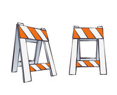

Laura Gwilliams
laura-dot-gwilliams-at-nyu-dot-edu
New York University
speech processing - morphology - predictive mechanisms
laura-dot-gwilliams-at-nyu-dot-edu
New York University
speech processing - morphology - predictive mechanisms
"Parakeet" with an ambiguous onset

"Barricade" with an ambiguous onset
